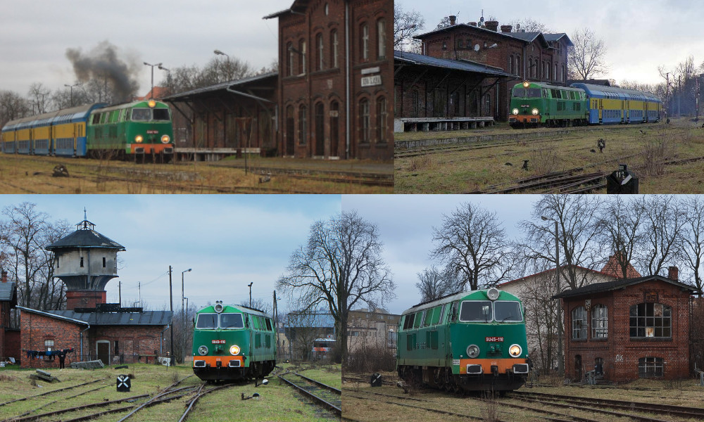

Opis / Historia linii
Jej początek był umieszczony w Bojanowie (0.000km), a jej koniec znajdował się w Odrzycku (50.028km). Na całej długości linii znajdowało się 15 stacji/przystanków kolejowych. Pierwszym z nich była stacja w Bojanowie (0.000km), następną z nich są Zaborowice (5.350km), Borszyn Wielki (8,575km), Borszyn Mały (10,852km), Góra Śląska (15.188km), Sławęcice Górowskie (18,281km), Strumienna (20,274km), Narratów (24,504km), Niechlów (29.482km), Dryżyna (36.050km), Szlichtyngowa (38.442km), Wilków Głogowski (41.428km), Serby Wschód (46.079km), Serby Zachód (48.867km), Odrzycko (50.028km).
Linia ta jest linią jednotorową. Otwarcie ruchu na odcinku Bojanowo - Góra Śląska nastąpił 14 grudnia 1885r, następnym odcinkiem był od Odrzycko - Szlichtyngowa 1 lipca 1907r, dalej trzeba było połączyć ze sobą te dwa odcinki Góra Śląska - Szlichtyngowa i jej otwarcie nastąpiło 3 miesiące później 1 października 1907r.W okresie międzywojennym (17 styczeń 1920) na odcinku Bojanowo - Zaborowice ruch był wstrzymany, ponieważ przechodziła tam granica państwa. Ponowne otwarcie ruchu na tym odcinku był w 1939r. W październiku 1991r nastąpiło zamknięcie ruchu pasażerskiego na całym odcinku od Bojanowa do Odrzycka. Ruch towarowy na odcinku Niechlów - Szlichtyngowa został zamknięty na początku roku 1992. Koniec tego roku też przyniósł zamknięcie ruchu towarowego Szlichtyngowa - Odrzycko. W 2000r nastąpiła kradzież torów między Niechlowem a Odrzyckiem. W tym samym roku jeszcze został zamknięty ruch towarowy między Górą a Niechlowem. 23 styczeń 2002r to była data o podjęciu, że odcinek Góra Śląska - Odrzycko będzie zlikwidowany. 2 września 2004r torowisko na odcinku Szlichtyngowa - Odrzycko zostało rozebrane. W 2005r nastąpiła kradzież kilku metrów toru w Sławęcicach między stacją a przejazdem kolejowym. W maju 2006r odcinek Góra Śląska - Odrzycko rozebrano. Rok 2011 a dokładnie 12 grudnia 2011r nastąpiło zamknięcie ruchu na ostatnim odcinku Bojanowo - Góra Śląska. Następnego dnia na szerokości budowanej drogi S5 torowisko zostało rozebrane.
----

A poniżej film i zdjęcia.

Bojanowo znajduje się w wojewódctwie wielkopolskim